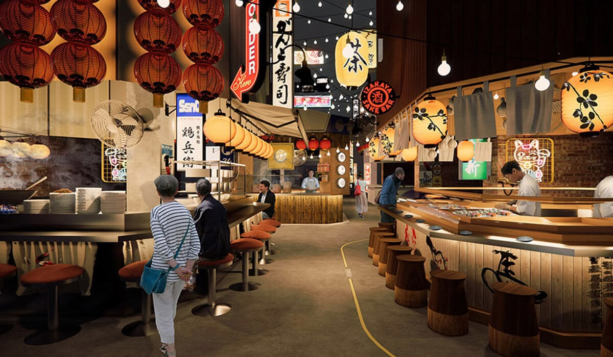

AN UNFORGETTABLE DINING EXPERIENCE
Nikmati perpaduan rasa autentik Jepang dan Korea dalam suasana interior kayu kontemporer yang elegan dan hangat. Kami menghadirkan harmoni cita rasa khas Timur Asing yang disajikan dengan estetika modern.
OishiOppa'lyy! berawal dari ide menyatukan kelezatan khas Jepang (Oishi) dan cita rasa populer Korea (Oppa). Kami berkomitmen menyajikan sajian kuliner Asia berkualitas tinggi dengan bahan-bahan yang selalu segar setiap harinya. Setiap hidangan diracik secara teliti untuk memberikan sensasi rasa terbaik di setiap gigitan.
MEET OUR EXECUTIVE CHEF
Chef Juna Rorimpandey
Di balik setiap ketelitian rasa dan kelezatan luar biasa di OishiOppa, terdapat kepemimpinan tegas serta standar tinggi dari Executive Chef Juna.
Berbekal pengalaman internasional dan disiplin kuliner yang tinggi, Chef Juna menggabungkan ketepatan teknik memasak khas Jepang dengan karakter bumbu khas Korea yang kaya rasa. With disiplin tanpa kompromi terhadap kualitas bahan segar dan presisi penyajian, Chef Juna memastikan setiap hidangan yang keluar dari dapur menyajikan kesempurnaan cita rasa.
"Kuliner terbaik diciptakan melalui disiplin tinggi, presisi rasa, dan rasa hormat pada setiap bahan baku yang dipakai." — Chef Juna

Kualitas Bahan & Autentisitas Rasa
Kami memegang teguh standar tinggi dalam pemilihan bahan baku. Ikan mentah dipasok segar setiap pagi, daging sapi dipotong sesuai standar kelayakan marbling terbaik, dan saus racikan dapur diolah secara alami tanpa bahan pengawet buatan.
Filosofi kami adalah menghormati tradisi kuliner asli sekaligus membuka ruang bagi kreativitas rasa modern yang disukai oleh semua kalangan.
LIHAT DAFTAR MENU